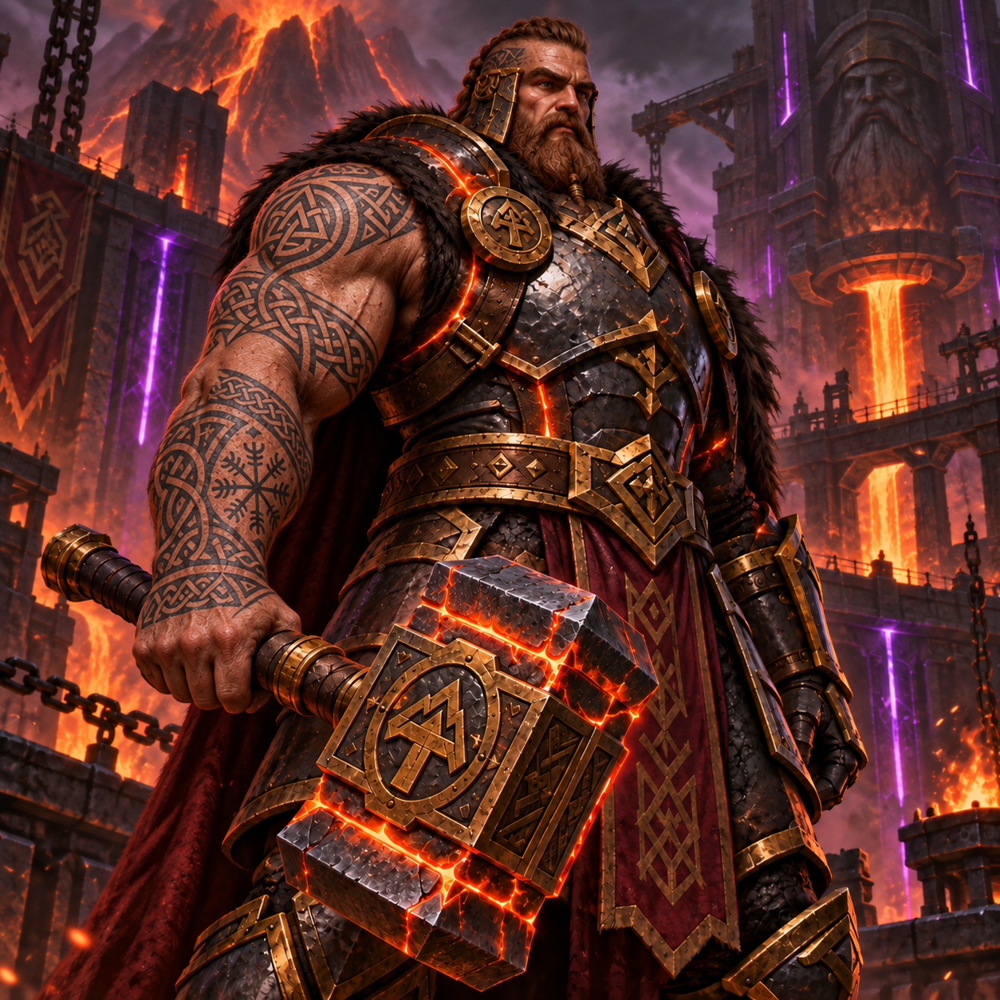

sobre o Heroi

Nascido nas fundições de Ostrogard, Vulcano forjou armas para os guerreiros de seu reino e foi lá que criou sua própria lâmina. Onde outros viam sucata, ele via invenções esperando para nascer. Resolvia problemas estruturais e fortalecia as defesas do reino, transformando o descartado em solução.
Herdeiro das Forjas de Ostrogard
Filho do soberano conhecido como Imperador da Lava, Vulcano nasceu destinado ao trono de Ostrogard. Desde pequeno, porém, trocava o silêncio dos salões pelo som dos martelos nas fundições.
Foi ao lado do tio, mestre ferreiro do reino, que aprendeu a trabalhar o ferro, recuperar materiais descartados e construir defesas capazes de resistir ao tempo.
O menino curioso cresceu entre projetos de muralhas e ferramentas gastas. Tornou-se um homem de porte imponente, força extraordinária e olhar atento aos problemas de seu povo. Enquanto o pai lhe ensinava a governar, o tio mostrava o que sustentava uma cidade: o trabalho de quem erguia suas casas, mantinha suas pontes e protegia suas fronteiras.
Sua primeira grande criação foi o Martelo de Ostrogard. Forjado com metal retirado das profundezas da montanha, ele parecia guardar o calor da fornalha mesmo depois de esfriar. Vulcano descobriu seu poder durante o desabamento de uma torre: ao golpear a base destruída, viu as pedras se unirem novamente. O esforço quase o deixou indefeso sob os escombros, mas os trabalhadores conseguiram escapar.
Anos depois, recebeu a coroa das mãos do pai. Mesmo como rei, nunca abandonou a forja. Sob seu comando, antigas ruínas deram lugar a moradias, as muralhas foram reforçadas e Ostrogard viveu um longo período de paz.
Até a noite em que os fornos se apagaram.
Um tremor percorreu a cidade, abrindo uma rachadura na muralha norte. Vulcano tentou restaurá-la, mas, pela primeira vez, as pedras não responderam. Seu martelo brilhou com intensidade e revelou marcas escondidas sob a fundação — os mesmos símbolos que ele havia encontrado no Pergaminho de Estruturas Perdidas.
Ao consultar o documento, percebeu que aquelas linhas não descreviam uma fortaleza. Eram o desenho de um selo, construído para manter algo preso sob o reino.
Antes do amanhecer, chegou uma notícia das minas: seu tio havia desaparecido ao investigar uma passagem recém-aberta. No chão, os guardas encontraram apenas uma ferramenta quebrada e uma mensagem gravada na rocha:
“Não reconstrua a entrada. Venha descobrir o que estamos guardando.”
Vulcano reuniu o pergaminho, prendeu o martelo à cintura e desceu em direção às fundições. Desta vez, teria de descobrir o que havia sob as muralhas antes de decidir como protegê-las.
Continua na Parte 2…
Parte 2 — O Coração da Forja
Vulcano atravessou as fundições apagadas e encontrou, atrás do último forno, a passagem aberta pelo tremor. Nas paredes, símbolos iguais aos do pergaminho brilhavam com uma luz azul que ele nunca havia visto. Quanto mais descia, mais forte seu martelo vibrava.
No fundo da montanha, encontrou o tio ajoelhado diante de uma enorme estrutura de ferro. Correntes antigas cercavam uma fenda por onde a lava avançava lentamente. O ferreiro estava vivo, mas uma viga caída prendia sua perna.
“Eu deixei a mensagem”, explicou o tio. “Se você fechasse a entrada, ninguém chegaria até aqui. O selo está cedendo.”
Vulcano ergueu a viga e libertou o tio. Só então percebeu que o desenho no pergaminho estava incompleto: o selo não era apenas uma prisão. Era parte de uma forja construída para controlar a pressão e o calor sob Ostrogard. Durante gerações, suas saídas haviam sido fechadas para dar espaço a novas construções.
Reconstruir tudo como antes apenas adiaria outro desastre. Vulcano precisava recuperar os canais antigos e dar à lava um caminho seguro, longe das casas e das minas.
Nível 60 — Reconstruir para proteger
A primeira tentativa falhou. Ao tentar mover toda a estrutura de uma vez, Vulcano perdeu as forças. O tio o puxou para trás de uma coluna antes que uma chuva de pedras atingisse o lugar onde estava.
Nas semanas seguintes, Vulcano voltou à montanha com os forjadores. Resgatou trabalhadores, recuperou ferramentas e reconstruiu pequenos trechos dos canais. Cada missão lhe ensinou a distribuir melhor o poder do martelo.
Ao alcançar o nível 60, estava preparado para usar a Regeneração de Construção na estrutura central. Durante vinte segundos, manteve o martelo apoiado no ferro enquanto as peças quebradas se uniam. Vulnerável durante o esforço, precisou confiar nos companheiros para protegê-lo.
Quando a habilidade terminou, o canal principal estava restaurado. Mas ainda faltavam as comportas das galerias mais profundas. Sem elas, abrir a forja inundaria as minas.
Nível 70 — Mestre das Forjas
Vulcano continuou as missões até que a última comporta estivesse pronta. Ao alcançar o nível 70, voltou com o tio à câmara central e acionou o mecanismo. A lava percorreu os canais, e os fornos de Ostrogard voltaram a acender.
No centro da câmara, o calor revelou uma bancada coberta por runas azuis. Seguindo os desenhos do pergaminho, tio e sobrinho trabalharam juntos para aprimorar o Martelo de Ostrogard. O metal recebeu novos reforços, e a luz azul passou a correr pelas inscrições entre as fissuras de lava.
De volta à cidade, a guilda entregou a Vulcano um manto de pele com tecido escuro e bordados que lembravam rios de fogo. Diante dos trabalhadores que haviam participado da reconstrução, o tio anunciou seu novo título:
“Vulcano, Mestre das Forjas de Ostrogard.”
Naquela noite, Vulcano deixou a coroa ao lado da bancada e pendurou o novo manto perto da porta. Ainda havia pontes para reparar e casas para erguer. Pela primeira vez em muitas semanas, porém, o som que vinha das profundezas era apenas o de uma forja trabalhando.
Fim da Parte 2 — A chama de Ostrogard permanece acesa.
Atributos e Habilidades
Evolução de Vulcano
Nível: 1
0 de 100 XP
Complete missões para evoluir.
⚔️ Força — 75%
🔨 Poder de Construção — 90%
🛡️ Defesa — 95%
✨ Engenhosidade — 85%
🏃 Agilidade — 50%
⚡ Regeneração de Construção
Vulcano usa o Martelo de Ostrogard para reconstruir estruturas danificadas e fortalecer as defesas do reino.
- Poder: 100%
- Nível necessário: 60
- Tempo de uso: 20 segundos
- Recarga: 1 minuto e 30 segundos
⚠️ Durante o uso, Vulcano fica vulnerável: os inimigos causam dano acima do normal.
Inventário e Conquistas
Contato com a Guilda
⚒️ Guilda dos Forjadores de Ostrogard
Enviar mensagem ao Vulcano ✉️
Nenhuma muralha se ergue sozinha. Junte-se aos guerreiros e construtores de Ostrogard para compartilhar projetos e proteger o reino.
Acessar o Discord ↗Guilda fictícia criada para este projeto. O link abre o site do Discord, não um servidor da guilda.